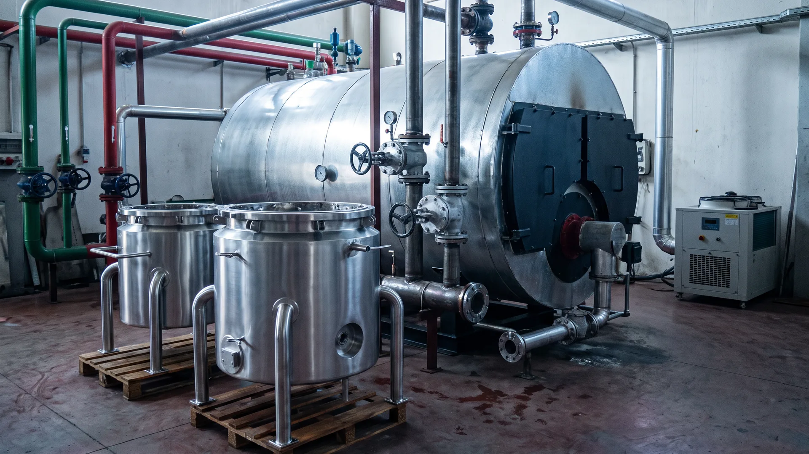
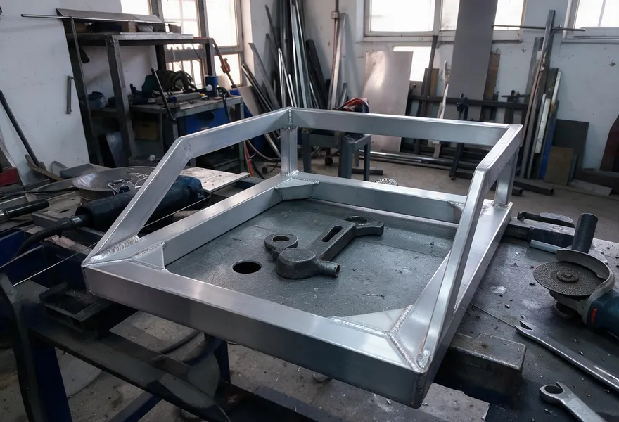
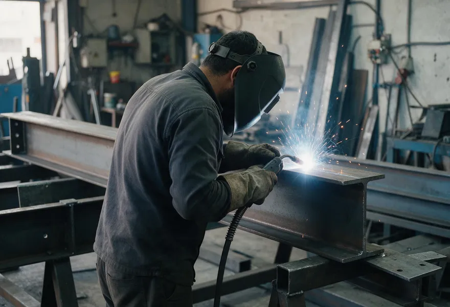
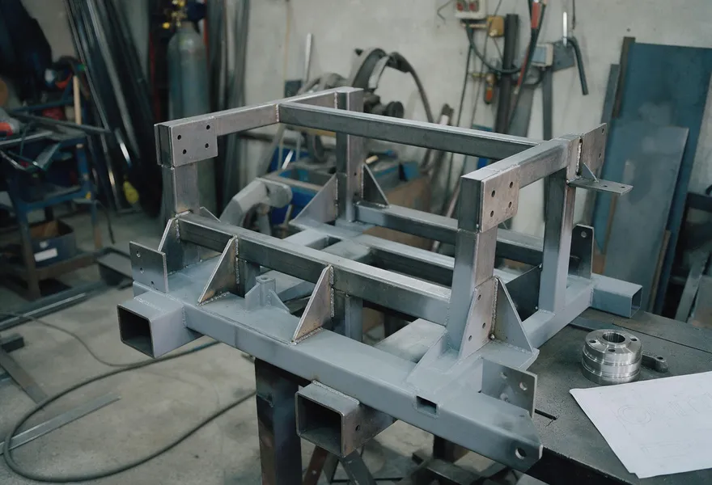
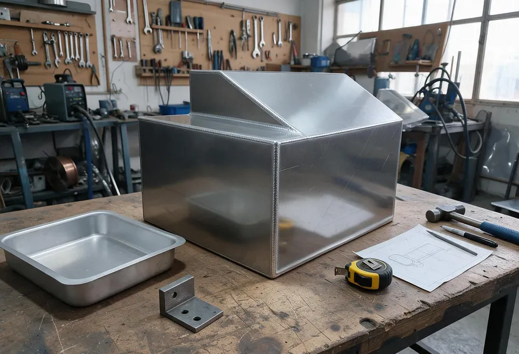
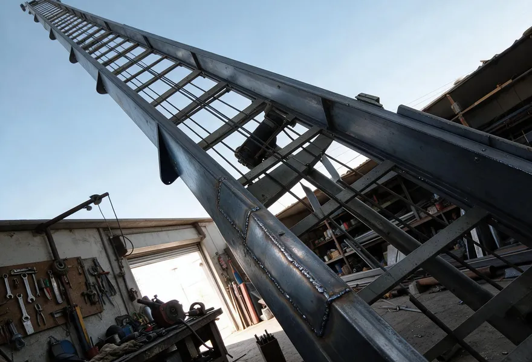
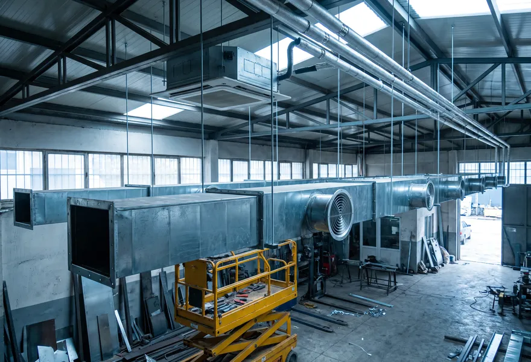
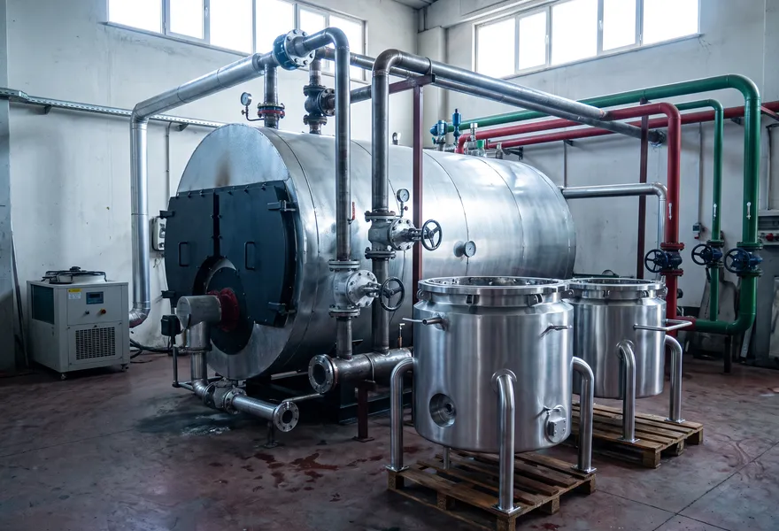
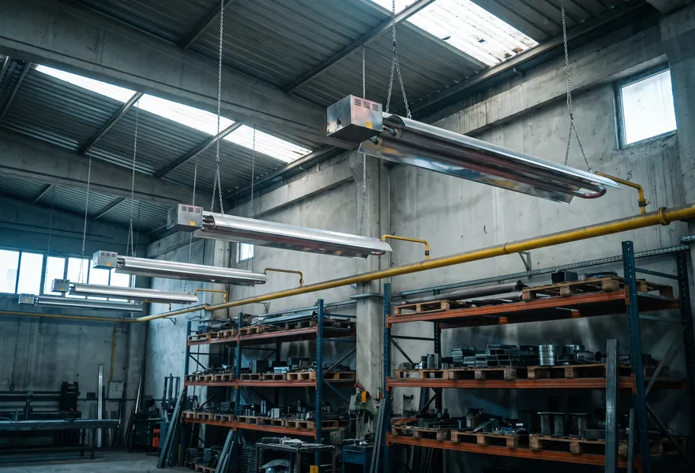
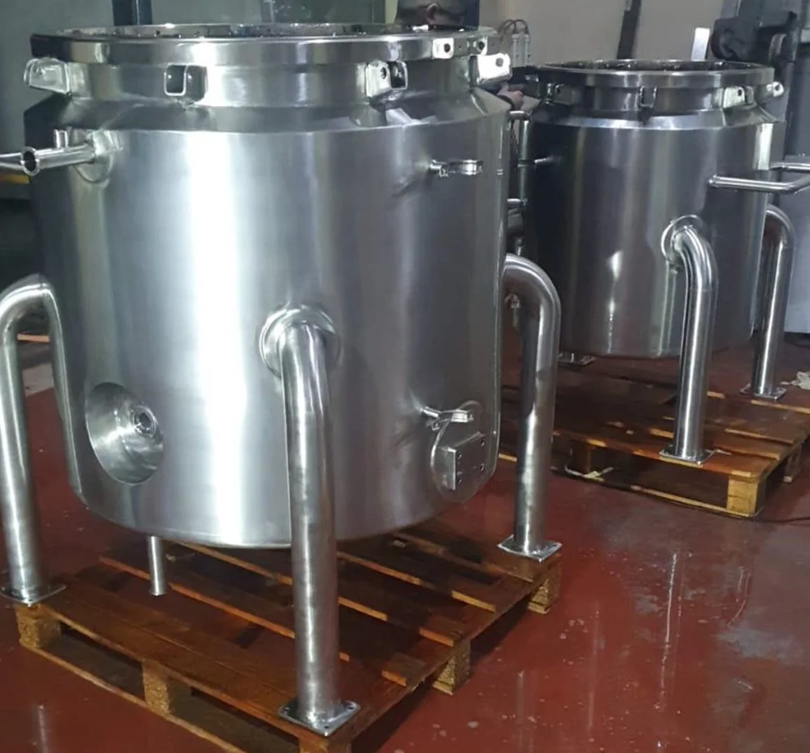

Alüminyum ve paslanmazda temiz dikiş.
Argon (TIG), gazaltı ve boru kaynağı; çelik konstrüksiyon ve makine imalatı. Endüstriyel ısıtma-soğutma, iklimlendirme ve doğalgazlı radyant ısıtma uygulamaları. Atölyede ya da sahada.


Argon (TIG)İnce sac, hassas iş
MIG / MAGKalın kesit, seri imalat
PaslanmazGıda ve kimya için
SahadaYerinde kaynak ve montaj
Ne yapıyoruz?
Kaynak ve imalat
Alüminyum, paslanmaz ve çelikte kaynaklı imalat, atölyede ya da sahada.
 01
01Argon (TIG) kaynağı
İnce sacda, alüminyumda ve paslanmazda temiz, gözeneksiz ve düzgün dikiş. Görünen yüzeylerde estetik kaynak.
AlüminyumPaslanmazTIGAyrıntılar
02Alüminyum kaynağı
Alüminyum konstrüksiyon, hazne, şase ve tamir işleri. Doğru tel ve gaz seçimiyle sağlam, çatlaksız birleşim.
AlüminyumTIGMIGAyrıntılar 03
03Paslanmaz kaynağı
Gıda, süt, kimya ve tesisat için tank, kazan, tezgâh ve kap imalatı. Paslanmazın korozyon direncini koruyan kontrollü kaynak.
PaslanmazTIGAyrıntılar
04Gazaltı (MIG/MAG) kaynağı
Kalın kesitli çelikte hızlı ve dolgun kaynak. Seri imalatta ve büyük hacimli işlerde kısa teslim süresi.
ÇelikMIG/MAGAyrıntılar 05
05Boru ve cidarlı boru kaynağı
Proses ve tesisat boruları; ısıtma ve soğutma hatlarında kullanılan çift cidarlı (ceketli) boru ve kaplar.
PaslanmazÇelikTIGAyrıntılar 06
06Çelik konstrüksiyon
İskelet, platform, sundurma, merdiven ve taşıyıcı sistemler. Atölyede imalat, sahada montaj.
ÇelikMIG/MAGAyrıntılar
07Makine imalatı
Çizimden ya da numuneden makine gövdesi, şase ve özel ekipman. KOSGEB ve kalkınma ajansı destekli makine projelerinde imalat.
ÇelikPaslanmazAlüminyumAyrıntılar
08Kaynaklı özel imalat
Tek parçadan küçük seriye, ölçüye özel kaynaklı imalat. Numune getirin, aynısını ya da daha sağlamını yapalım.
AlüminyumPaslanmazÇelikAyrıntılar
09Yük asansörü tamiri
Yük asansörü kule, kabin ve taşıyıcı aksamında kaynaklı onarım; araç üstü yük asansörü tamiri.
ÇelikSahaAyrıntılarEnerji ve iklimlendirme
Isıtma, soğutma, iklimlendirme ve enerji tesisatında proje, imalat ve montaj.

10İklimlendirme ve enerji proje uygulamaları
Isıtma, soğutma ve havalandırma tesisatında proje, imalat ve montaj. Enerji verimliliğini artıran uygulamalar.
HVACProjeMontajAyrıntılar
11Endüstriyel ısıtma ve soğutma teknolojileri
Merkezi kazan, buhar ve kızgın yağ tesisatı, proses soğutma hatları. Üretim tesisleri için ısıtma ve soğutma çözümleri.
KazanBuharProses soğutmaAyrıntılar
12Doğalgazlı radyant ısıtma sistemleri
Fabrika, depo, atölye ve sera gibi yüksek tavanlı alanlar için doğalgazlı radyant ısıtma. Keşif, montaj ve bakım.
DoğalgazRadyantMontajAyrıntılarAtölyeden çıkan işler
Galerideki işlerin hepsi 3A atölyesinden ve sahadan.

İşe göre doğru kaynak
3A Kaynak İmalat Tic. Şti., 2012'de Eskişehir'de kuruldu. Alüminyumdan paslanmaza, boru hattından çelik iskelete; her işte malzemeye ve kullanım yerine uygun yöntemi seçip temiz, sağlam ve ölçüsünde teslim ediyoruz.
Doğru yöntem
İnce ve görünen işte argon (TIG), kalın kesitte gazaltı (MIG/MAG). Yönteme işin ihtiyacı karar verir.
Hijyenik paslanmaz işçilik
Gıda, süt ve kimya ekipmanında korozyon direncini koruyan, temizlenebilir dikişler.
Çizimden ya da numuneden
Çiziminiz varsa ona göre, yoksa numune ya da ölçüye göre üretiyoruz.
Atölyede ve sahada
Taşınabilir ekipmanla tesiste, şantiyede ya da yük asansörünün başında kaynak.
Fotoğraftan teslime dört adım
Gönderin
Fotoğraf, ölçü ya da çizimi WhatsApp'tan veya formdan iletin.
Teklif
İşi değerlendirir, gerekirse keşfe gelir; fiyat ve süreyi netleştiririz.
İmalat
Malzemeye uygun yöntemle atölyede ya da sahada üretiriz.
Teslim
Kontrol edilmiş işi teslim eder, gerekiyorsa montajını yaparız.
Kimler için çalışıyoruz?
Gıda ve süt
Paslanmaz tank, kazan, tezgâh ve proses ekipmanı.
Kimya ve proses
Paslanmaz kap, boru hattı ve ceketli ekipman.
Makine ve sanayi
Makine gövdesi, şase, fikstür ve özel parça.
İnşaat ve yapı
Çelik konstrüksiyon, korkuluk, merdiven, yük asansörü.
Birlikte çalıştığımız firmalardan


Parçanın fotoğrafını çekin, gönderin
Kırık parça, ölçülü çizim ya da benzer bir örnek fotoğrafı yeter. Yapılabilirliğini ve yaklaşık fiyatı söyleyelim.
Merak edilenler
Tek parça tamir ya da küçük işler alıyor musunuz?
Evet. Kırılan bir parçanın kaynağından ölçüye özel tek bir tezgâha, küçük seriden büyük imalata kadar iş alıyoruz. Fotoğrafını gönderin, yapılabilirliğini hemen söyleyelim.
Sahaya gelip kaynak yapıyor musunuz?
Evet. Taşınabilir ekipmanla şantiyede, fabrikada ya da tesiste yerinde kaynak ve montaj yapıyoruz. Konum ve işin tarifiyle birlikte yazın.
Teklif için ne göndermeliyim?
Parçanın ya da alanın fotoğrafı, yaklaşık ölçüler, malzeme (biliyorsanız), adet ve varsa çizim (PDF ya da DWG). Bilmediğiniz kısımları boş bırakın; gerekirse keşfe geliriz.
Hangi malzemelerle çalışıyorsunuz?
Alüminyum ve alaşımları, paslanmaz çelik ve karbon çelik. Yönteme işe göre karar veriyoruz: ince ve hassas işlerde argon (TIG), kalın kesitte ve seri imalatta gazaltı (MIG/MAG).
Isıtma, soğutma ve iklimlendirme işi de yapıyor musunuz?
Evet. Endüstriyel ısıtma-soğutma tesisatı, iklimlendirme ve doğalgazlı radyant ısıtma sistemlerinde projeden montaja kadar çalışıyoruz; kanal, boru ve taşıyıcı imalatını kendi atölyemizde yapıyoruz.
Destek kapsamındaki makine projelerinde çalışıyor musunuz?
Evet. KOSGEB ve kalkınma ajansı destekli makine projelerinde imalat tarafını üstleniyoruz. Proje dosyanızla birlikte görüşelim.